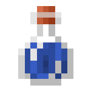
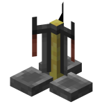

I Présentation
1) Il existe différents types de potions de différentes couleurs :

2) Pour les faire vous aurez besoin d'un alambic :

II Les potions sont divisées en deux parties:
Il y a tout d'abord l'ingrédient à mettre pour donner son "effet" à la potion
Et il y a ensuite l'ingrédient à rajouter à la potion pour faire son "amélioration"